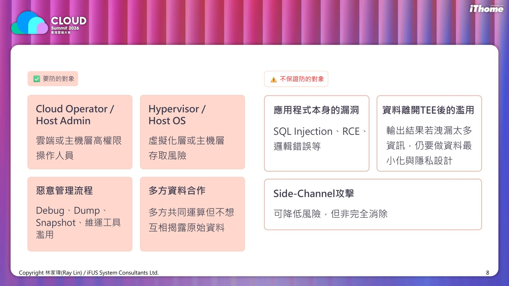
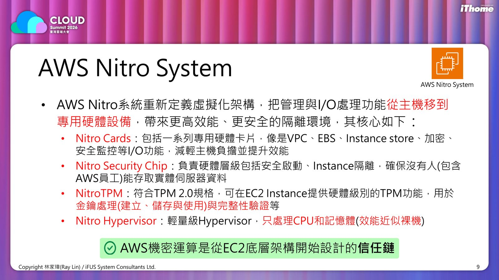
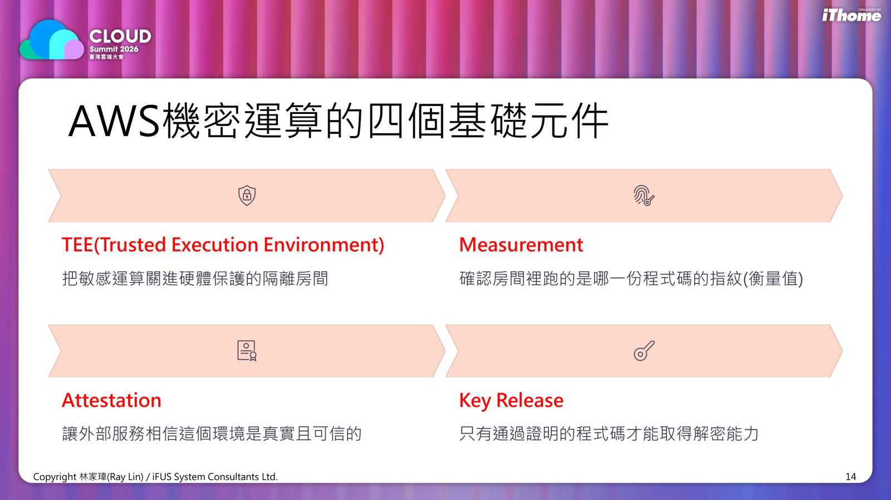
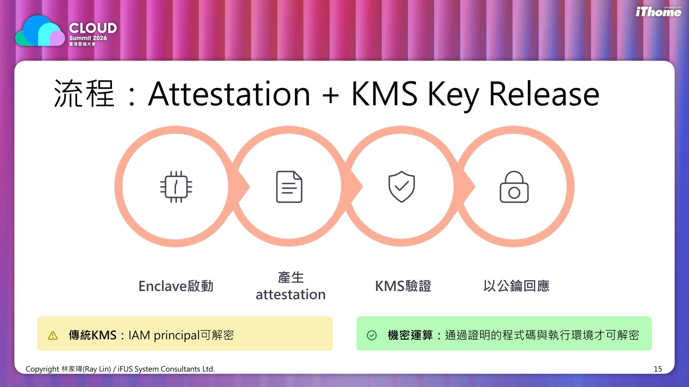

摘要
本場演講聚焦「使用中資料」這個最常被忽略的安全缺口，說明資料在記憶體中處理時容易被 Memory Dump、Rowhammer、Side-channel 等手法竊取，進而介紹機密運算（Confidential Computing）如何以硬體級 TEE（Trusted Execution Environment）補上這道防線。講者深入剖析 AWS Nitro System、Nitro Enclaves 的信任鏈設計，並比較 AWS、Azure、GCP 三大雲端平台在機密運算上的定位與強項，協助企業在 AI、金融、醫療等高敏感資料場景中做出正確的技術選型。
重點整理
- 資料有三態：靜態、傳輸、使用中，其中「使用中」資料最常被忽略，一旦載入記憶體即為明文
- Rowhammer 攻擊最快可在極短時間內透過位元翻轉取得系統控制權
- AWS Nitro System 將虛擬化管理與 I/O 移至專用硬體，Nitro Enclaves 提供獨立、高度受限的隔離執行環境
- 機密運算的四個基礎元件為 TEE、Measurement、Attestation、Key Release，須通過證明的程式碼才能取得解密金鑰
- AWS、Azure、GCP 三雲機密運算各有定位：AWS 強調金鑰與敏感資料保護、Azure 提供完整企業工具箱、GCP 專攻多方資料合作與 AI/GPU 機密運算
重點圖片／架構圖




為什麼需要機密運算
講者指出資料存在靜態、傳輸、使用中三種狀態，其中「使用中」資料最常被忽視，因為資料一旦載入記憶體便會變成明文，雲端或主機管理者理論上都能存取。常見風險包括 Memory Dump 洩漏金鑰與模型權重、Rowhammer 透過反覆存取記憶體列造成位元翻轉，以及利用時間與快取行為推測機密的 Side-channel 攻擊。機密運算的目的正是保護這段「使用中」資料，透過硬體式、可證明的 TEE 執行運算，適用於金融、醫療、AI 模型訓練與區塊鏈錢包等高敏感場景。
AWS Nitro System 與 Nitro Enclaves
AWS 機密運算的核心是 Nitro System，將虛擬化管理與 I/O 處理功能從主機移至專用硬體卡片（Nitro Cards），並透過 Nitro Security Chip 確保包含 AWS 員工在內的任何人都無法存取實體伺服器資料，NitroTPM 則提供硬體級金鑰管理。在此基礎上，Nitro Enclaves 可在 EC2 Instance 內切出更小的信任邊界，形成獨立、強化且高度受限的虛擬機器，沒有持久性儲存或外部網路連線，Parent Instance 的任何程序、使用者皆無法存取其內容，適合處理金鑰、PII 解密、簽章與模型推論等最敏感的運算。
機密運算的四大元件與信任流程
機密運算建立在四個基礎元件之上：TEE 把敏感運算關進硬體保護的隔離房間，Measurement 確認房間內執行的程式碼指紋，Attestation 讓外部服務相信該環境真實可信，Key Release 則確保只有通過證明的程式碼才能取得解密能力。流程上，Enclave 啟動後會產生 attestation，經 KMS 驗證後才以公鑰回應，與傳統 KMS 只要求 IAM principal 即可解密不同，機密運算要求執行環境本身也必須通過驗證。
三大雲端平台的機密運算比較
AWS 從 Nitro System 底層隔離設計出發，依需求選擇 Enclave（應用層隔離）或 SEV-SNP（VM 記憶體加密），提供 always-on 的基礎保護且無額外費用，強項在私鑰保護、數位簽章與敏感資料解密。Azure 則從啟用 Confidential VM 開始，強調負載平移的便利性，涵蓋 AMD SEV-SNP、Intel TDX、Intel SGX、AKS Confidential Containers 與 Confidential GPU，適合政府、金融、醫療等既有 VM 搬遷情境。GCP 則主打多方資料合作與 AI/GPU 機密運算，透過 Confidential Space 與 NVIDIA H100 Confidential GPU 支援跨組織分析與隱私保護資料合作，但採額外收費模式。
機密運算的防護邊界
講者也提醒機密運算並非萬能：它能防禦雲端或主機層高權限操作人員、Hypervisor/Host OS 層的存取風險、惡意管理流程與多方資料合作的揭露風險，但無法保證防止應用程式本身的漏洞（如 SQL Injection、RCE）、資料離開 TEE 後的濫用，以及可降低但無法完全消除的 Side-channel 攻擊，因此企業仍需搭配應用安全與資料最小化設計。